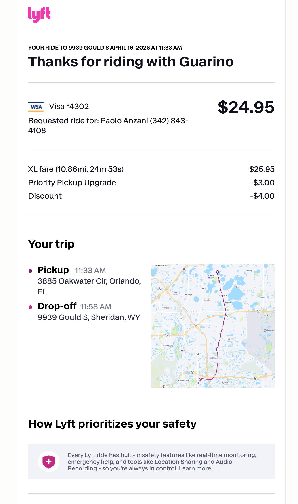
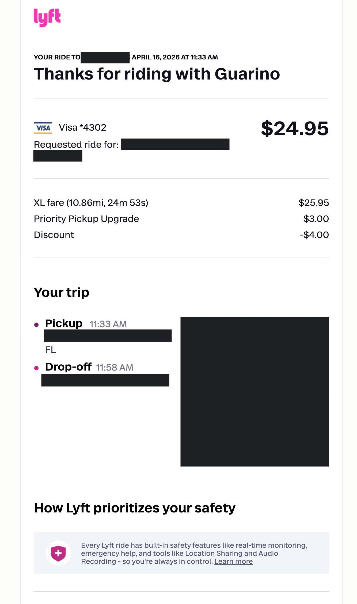
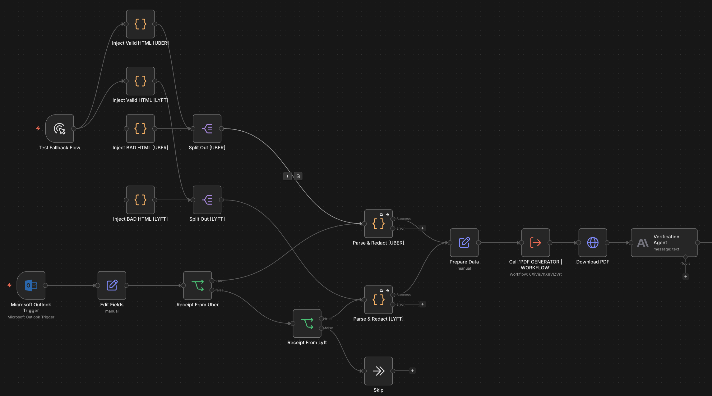
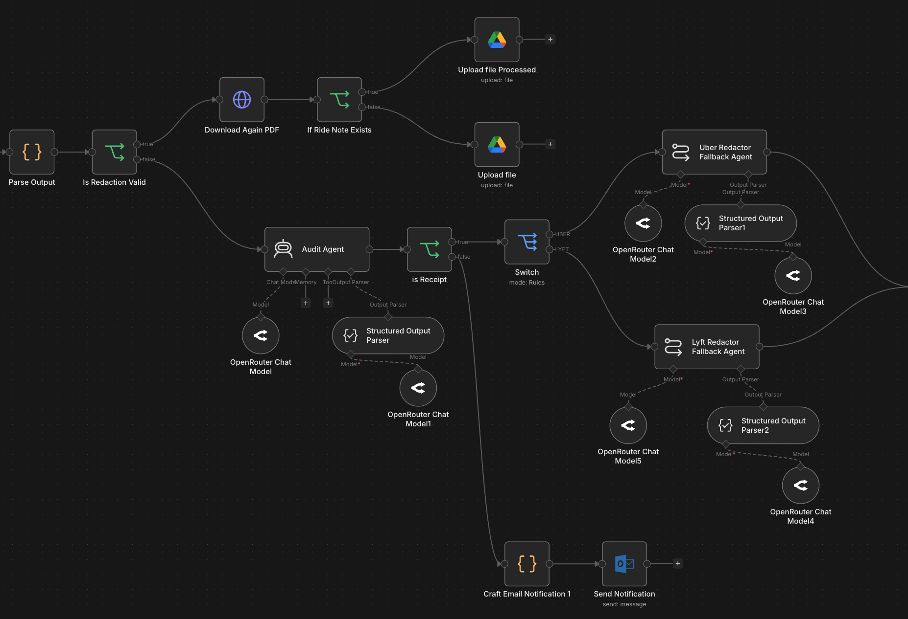
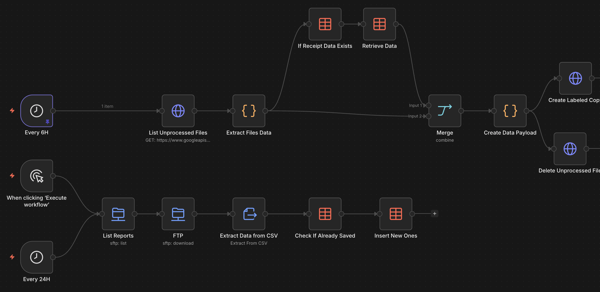

Gladium AI > Projects > ClinTrial Research
A fail-proof, AI-powered, PII-compliant system for automatic redaction of sensitive patient information from receipts.
ClinTrial Research is a leading company in the trial site management industry. Part of their routine office tasks is to redact and store ride on-demand receipts from vendors. Part of their service includes making sure patients are being transported on site and back home during trial days. Every month, ride receipts need to be sent to the trial sponsors in order to get reimbursement. Due to PII compliance rules, the receipts cannot just be stored and sent over as they are — every piece of personal information attributable to the patient needs to be carefully redacted.
Before we stepped in, the process was done entirely manually by the office team: every receipt needed to be manually saved from the inbox, converted into a PDF file, manually redacted, and paired with the correct patient's trial information.


- Programmatic redaction script (built for speed)
- AI verification (claude haiku 4-5)
- HTML to PDF renderer microservice
- Vendors SFTP connection system
- Agentic fallback mechanism
- Failure notification system
The system we built monitors the inbox where receipts are automatically delivered. When a receipt from Uber or Lyft is detected, the system executes a custom-made redaction script on the raw email's HTML content. We then pipe the redacted result through our own microservice where the HTML file gets rendered to a PDF.
An LLM chain node, powered by claude-haiku-4-5, analyzes the receipt and determines whether it was redacted correctly, checking that no sensitive information slipped through.

The fallback system rarely gets triggered, but when it does we first use an AI agent node to verify we are actually looking at a receipt file. If that's not the case, we gracefully end the workflow there but send a notification to our team so the execution can be audited for further investigation and potential fixes. We then look into what really happened.

After this step we have two distinct AI agents, one for each vendor. The agents' job is to take the entire receipt's HTML content and rewrite it from scratch with redacted information. The logic is simple: to save cost and speed, our primary system is based on a programmatic script. The receipts always come in the same format, so we can parse them very fast and redact information without relying on AI. In the rare case this process fails, we fall back on an intelligent approach, using an LLM to rewrite the entire receipt from scratch with sensitive data stripped. In the end the process is the same: the HTML content gets converted into a PDF file and safely stored.
Every receipt needs to be paired with the trial information of the patient who took the ride. While inside Uber receipts this data was fairly easy to retrieve, on Lyft receipts the extraction was harder — not because we couldn't parse them, but because the data wasn't present at all most of the time.
To solve the problem we utilized the Lyft SFTP automatic expense reports system. We built another workflow to
monitor uploaded .csv reports every day. By doing so we could pair the trial information
we needed with the unique receipt number. The number gets extracted from the receipt during the
redaction phase, and the resulting PDF gets saved with the following naming convention:
<receipt_number>-LYFT.pdf
